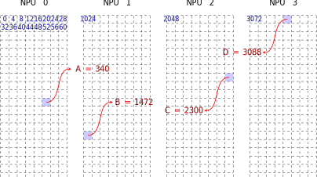
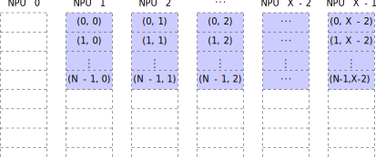
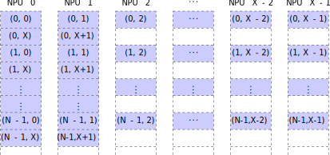
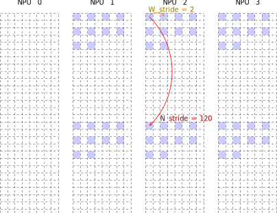
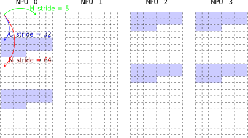
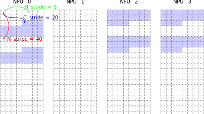
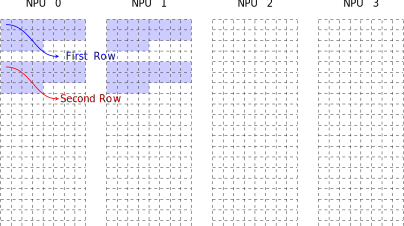
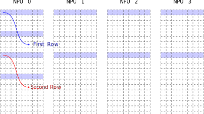
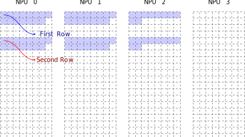
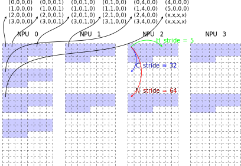

Address of Tensor in Local Memory¶
In local memory, a tensor has a unique address. Suppose there are X NPUs and the size of local memory in each NPU is S bytes. A valid address of tensor in local memory is in [0, X * S - 1].
Given an address A of a tensor, there exists A = Q * S + R, where Q = floor(A / S) and R = A mod S, meaning that the tensor starts at NPU Q with offset R.
To illustrate simply, let X = 4 and S = 1024.
The following figure shows where the four addresses A = 340, B = 1472, C = 2300 and D = 3088 are (Note that each block has size of 4 bytes).

Scatter Features to Different NPUs¶
For a tensor with shape (N, C, H, W), it has N * C features, if copied to local memory, the features will be scattered to different NPUs. Denote the feature (n, c, :, :) simply by (n, c), where n is in [0, N - 1] and c is in [0, C - 1]. Let the number of NPUs be X.
Another important concept is the number of channels per NPU. Supposing the tensor starts at NPU Q, the number of channels per NPU is ceil((Q + C) / X), obtained by calling
okk_channle_num_per_npu().Supposing C = X - 1 and the tensor starts at NPU 0, the following figure shows how the features are scattered (Note that each block represents a memory area for storing a feature).
No features are scattered to NPU X - 1, the feature (1, 0) is not in NPU X - 1, instead, it is in NPU 0. It is found that the features (*, c) are in the same NPU for arbitary fixed c in [0, C - 1]. The number of channels per NPU is ceil((0 + X - 1) / X) = 1.
Supposing C = X - 1 and the tensor starts at NPU 1, the following figure shows how the features are scattered.
No features are scattered to NPU 0, like NPU X - 1 in the previous case. Still, the number of channels per NPU is ceil((1 + X - 1) / X) = 1.
Supposing C = X + 2 and the tensor starts at NPU 0, the following figure shows how the features are scattered.
The features (*, X) and (*, X + 1) are scattered to NPU 0 and NPU 1, respectively. In the second block row, there are X - 2 empty blocks storing nothing about this tensor. The number of channels per NPU is ceil((0 + X + 2) / X) = 2.
In this case, not only the features (*, c) are in the same NPU, but also (*, c + X) if c + X is in [0, C - 1]. The features (*, c_0) and (*, c_1) are in the same NPU if and only if c_0 mod X = c_1 mod X.
Supposing C = X + 2 and the tensor starts at NPU X - 1, the following figure shows how the features are scattered.
Three block rows are used to store the C features of one batch with X - 1 empty blocks in each the first and third row. The number of channels per NPU is ceil((X - 1 + X + 2) / X) = 3. Such a storage is terrible and causes a lot of waste of local memory.
If reusing the empty blocks to store some other tensors, it should be much careful and know the TPU well, otherwise, the data in these tensors may be destroyed when NPUs work parallel. Try not to reuse the empty blocks.


Strides in Local Memory¶
A tensor in local memory can not be described only by the address, shape and data type, the strides are also necessary. For a 4D tensor with shape (N, C, H, W), there are four relative strides named N stride, C stride, H stride and W stride.
For arbitary n in [0, N - 1], c in [0, C - 1], h in [0, H - 1] and w in [0, W - 1],
- N stride: number of elements from (n, c, h, w) to (n + 1, c, h, w).
- C stride: number of elements from (n, c, h, w) to (n, c + X, h, w), where X is the number of NPUs.
- H stride: number of elements from (n, c, h, w) to (n, c, h + 1, w).
- W stride: number of elements from (n, c, h, w) to (n, c, h, w + 1).
To illustrate simply, the number of the NPUs is set to 4.
Given a tensor with shape (N = 2, C = 5, H = 3, W = 4) and data type fp32 starting at NPU 0, W stride = 2, H stride = 16, C stride = 56 and N stride = 120, the following figure shows how it is posed in local memory (Note that each block has size of 4 bytes).
When W = 1, H = 1 or N = 1, the relative stride makes no sense. For C stride, it makes no sense when the number of channels per NPU is 1 (See the following case).
Given a tensor with shape (N = 2, C = 3, H = 1, W = 10) and data type fp32 starting at NPU 1, W stride = 2 and N stride = 120, the following figure shows how it is posed in local memory.
Since H = 1 and the number of channels per NPU is ceil((1 + 3) / 4) = 1, H stride and C stride both make no sense.

Strides in System Memory¶
A tensor in system memory can not be described only by the address, shape and data type, the strides are also necessary. For a 4D tensor with shape (N, C, H, W), there are four relative strides named N stride, C stride, H stride and W stride.
For arbitary n in [0, N - 1], c in [0, C - 1], h in [0, H - 1] and w in [0, W - 1],
- N stride: number of elements from (n, c, h, w) to (n + 1, c, h, w).
- C stride: number of elements from (n, c, h, w) to (n, c + 1, h, w).
- H stride: number of elements from (n, c, h, w) to (n, c, h + 1, w).
- W stride: number of elements from (n, c, h, w) to (n, c, h, w + 1).
When W = 1, H = 1, C = 1 or N = 1, the relative stride makes no sense.
Layouts¶
Continuous Layout¶
Continuous layout is a layout of tensor in system memory. If a tensor with shape (N, C, H, W) is in the continuous layout, it is required that
- The W stride is 1.
- The H stride is W.
- The C stride is H * W.
- The N stride is C * H * W.
The strides can be obtained by calling
okk_continuous_stride().
128-Byte Aligned Layout¶
128-byte aligned layout is a layout of 4D tensor in local memory. If a tensor with shape (N, C, H, W) is in the aligned layout, it is required that
- The address of the tensor is divisable by 128.
- The W stride is 1.
- The H stride is W.
- The C stride is ceil(H * W / 32) * 32 if the data type is 32-bit, ceil(H * W / 64) * 64 if the data type is 16-bit, ceil(H * W / 128) * 128 if the data type is 8-bit.
- The N stride is the C stride multiply by the number of channels per NPU.
The strides can be obtained by calling
okk_128_byte_aligned_stride_for_32bit(),okk_128_byte_aligned_stride_for_16bit()orokk_128_byte_aligned_stride_for_8bit().To illustrate simply, the number of the NPUs is set to 4.
Given a tensor with shape (N = 2, C = 3, H = 4, W = 5) and data type fp32, the following figure shows how it is in the aligned layout (Note that each block has size of 4 bytes).
In this case, C stride is ceil(4 * 5 / 32) * 32 = 32, explaining why 32 - 4 * 5 = 12 empty blocks are appended to each feature. The number of channels per NPU is 1, so C stride makes no sense and N stride is 32 * 1 = 32.
Supposing the tensor starts at NPU 2, the following figure shows how the tensor is in the aligned layout.
Now, C stride is still 32, but the number of channels per NPU is 2, so C stride is useful and N stride is 32 * 2 = 64.

Compact Layout¶
Compact layout is a layout of 4D tensor in local memory. If a tensor with shape (N, C, H, W) is in the compact layout, it is required that
- The address of the tensor is divisable by 4.
- The W stride is 1.
- The H stride is W.
- The C stride is H * W.
- The N stride is the C stride multiply by the number of channels per NPU.
The strides can be obtained by calling
okk_compact_stride().To illustrate simply, the number of the NPUs is set to 4.
Given a tensor with shape (N = 2, C = 3, H = 4, W = 5) and data type fp32, the following figure shows how it is in the compact layout (Note that each block has size of 4 bytes).
Supposing the tensor starts at NPU 2, the following figure shows how the tensor is in the compact layout.


Matrix Layout¶
Matrix layout is a layout of matrix in local memory. If a matrix with size N-by-M is in the matrix layout, it could be viewed as a 4D tensor with shape (N = N, C = ceil(M / W), H = 1, W = W) in the 128-Byte Aligned Layout, where W is in [1, M] and given by user.
To illustrate simply, the number of the NPUs is set to 4.
Given a matrix with size 2-by-40 and data type fp32, W = 40, the following figure shows how it is in the matrix layout (Note that each block has size of 4 bytes).
All the columns of the matrix are in NPU 0 since C = ceil(40 / 40) = 1. To be in the aligned layout, one row of the matrix takes ceil(40 / 32) * 32 = 64 blocks to be stored in each NPU.
Taking W = 20, the following figure shows how the matrix is in the matrix layout.
The columns of the matrix are evenly divided into NPU 0 and NPU 1, and one row of the matrix takes ceil(20 / 32) * 32 = 32 blocks to be stored in each NPU. It is found that decreasing W can help relieve storage pressure.
Taking W = 10, the following figure shows how the matrix is in the matrix layout.
One row of the matrix still takes ceil(10 / 32) * 32 = 32 blocks to be stored in each NPU, but the columns of the matrix are evenly divided into all NPUs.
Keeping decreasing W and taking W = 8, the following figure shows how the matrix is in the matrix layout.
Although W is decreased, C = ceil(40 / 8) = 5 is greater than the number of NPUs, instead, more blocks are used to store one row of the matrix. By selecting an appropriate W can the storage achieve the best.
In the previous cases, M is divisable by W, if not, for instance, taking W = 15, the following figure shows how the matrix is in the matrix layout.
In NPU 0 and NPU 1, the number of the elements of one row is 15, but in NPU 2, the number is 40 - 15 * 2 = 10. If M is not divisable by W, the last channel only contains M - W * floor(M / W) elements.
Taking W = 6, the following figure shows how the matrix tensor is in the matrix layout in local memory.
More memory is used to store the matrix for W = 6 than W = 15. It is suggested that W should be modertately small for using more NPUs to store the matrix, but C is better not greater than the number of NPUs.


Storage Modes¶
4N-mode¶
4N-mode is a storage mode for a tensor of data type int8 or uint8 in local memory.
If a tensor with shape (N, C, H, W) and data type int8 or uint8 is in the 4N-mode, it is required that the four elements at (4 * m, c, h, w), (4 * m + 1, c, h, w), (4 * m + 2, c, h, w) and (4 * m + 3, c, h, w) are continuous in storage for arbitary m in [0, M - 1], c in [0, C - 1], h in [0, H - 1] and w in [0, W - 1], where M = ceil(N / 4).
For convenience, the data type of the tensor in the 4N-mode could be viewed as (int8, int8, int8, int8) denoted by int8x4 other than int8, or (uint8, uint8, uint8, uint8) denoted by uint8x4 other than uint8. The new data type is 32-bit.
Against the new data type, the shape could also be viewed as (M, C, H, W) other than (N, C, H, W), and the strides of the tensor in the 4N-mode are always against the new data type and the new shape.
If N is not divisable by 4, 4 - (N mod 4) dummy element(s) should be appended to make up the 4N-mode.
To illustrate simply, the number of the NPUs is set to 4.
Given a tensor with shape (N = 6, C = 5, H = 4, W = 5) and data type int8, the following figure shows how it is in the 4N-mode and the aligned layout (Note that each block has size of 4 bytes).
The new shape of the tensor against data type int8x4 is (M = 2, C = 5, H = 4, W = 5).
N = 6 is not divisable by 4, so 4 - (6 mod 4) = 2 dummy elements are appended, e.g., the int8x4 element at (1, 0, 0, 0) of the new shape contains two int8 elements at (4, 0, 0, 0) and (5, 0, 0, 0) of the original shape and two dummy ones.
2N-mode¶
2N-mode is a storage mode for a tensor of data type int16 or uint16 in local memory.
If a tensor with shape (N, C, H, W) and data type int16 or uint16 is in the 2N-mode, it is required that the two elements at (2 * m, c, h, w), (2 * m + 1, c, h, w) are continuous in storage for arbitary m in [0, M - 1], c in [0, C - 1], h in [0, H - 1] and w in [0, W - 1], where M = ceil(N / 2).
For convenience, the data type of the tensor in the 2N-mode could be viewed as (int16, int16) denoted by int16x2 other than int16, or (uint16, uint16) denoted by uint16x2 other than uint16. The new data type is 32-bit.
Against the new data type, the shape of the tensor could also be viewed as (M, C, H, W) other than (N, C, H, W), and the strides of the tensor in the 2N-mode are always against the new data type and the new shape.
If N is odd, a dummy element should be appended to make up the 2N-mode.
To illustrate simply, the number of the NPUs is set to 4.
Given a tensor with shape (N = 3, C = 5, H = 4, W = 5) and data type int16, the following figure shows how it is in the 2N-mode and the aligned layout (Note that each block has size of 4 bytes).
The new shape of the tensor against data type int16x2 is (M = 2, C = 5, H = 4, W = 5)
N = 3 is odd, so a dummy element is appended, e.g., the int16x2 element at (1, 0, 0, 0) of the new shape contains an int8 element at (2, 0, 0, 0) of the original shape and a dummy one.

2IC-mode¶
2IC-mode is a storage mode for a 2D convolution weight tensor of data type fp32 in local memory.
The shape of a 2D convolution weight tensor in local memory is [I, O, H, W], where I is the number of input channels, O is the number of output channels, H and W are the kernel height and width. If such a weight tensor is in the 2IC-mode, it is required that the two elements at (2 * j, o, h, w), (2 * j + 1, o, h, w) are continuous in storage for arbitary j in [0, J - 1], o in [0, O - 1], h in [0, H - 1] and w in [0, W - 1], where J = ceil(I / 2).
For convenience, the data type of the tensor in the 2IC-mode could be viewed as (fp32, fp32) denoted by fp32x2 other than fp32. The new data type is 64-bit.
Against the new data type, the shape of the weight tensor could also be viewed as (J, O, H, W) other than (I, O, H, W), and the strides of the weight tensor in the 2IC-mode are always against the new data type and the new shape.
If I is odd, a dummy element should be appended to make up the 2IC-mode.